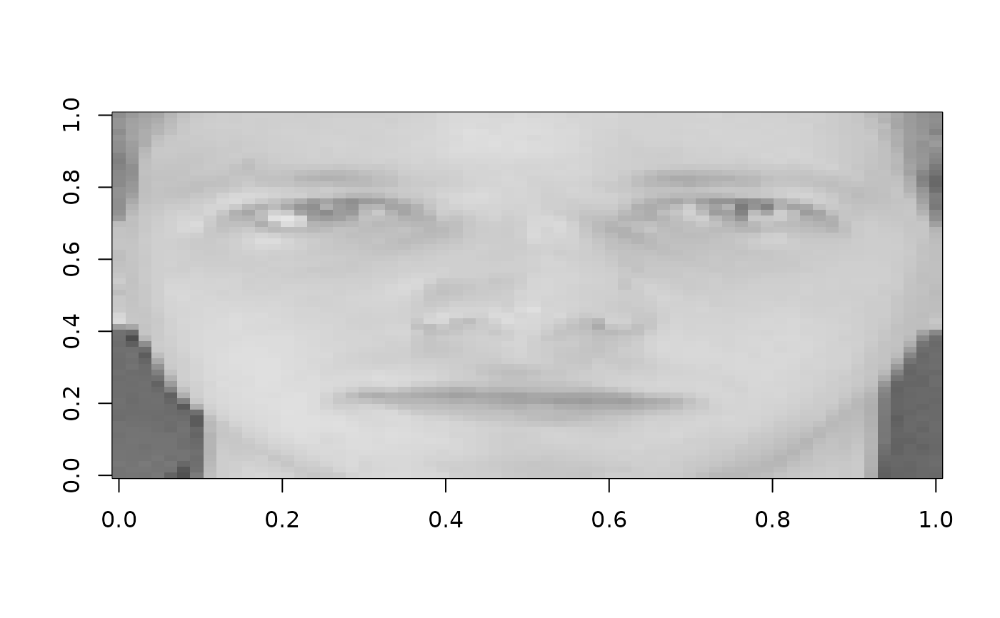

Grayscale face images from AT&T Laboratories Cambridge. This dataset contains 400 face images (64x64 pixels) from 40 subjects, with 10 images per subject showing different poses, expressions, and lighting conditions.
Format
A dgCMatrix sparse matrix (400 x 4096) containing grayscale
face images. Each row is a flattened 64x64 pixel image with values in [0,1].
Subject labels are stored as an attribute.
Access metadata via:
attr(olivetti, "subject")- Factor indicating which of 40 subjectsattr(olivetti, "image_shape")- c(64, 64) image dimensionsattr(olivetti, "n_subjects")- Number of subjects (40)attr(olivetti, "images_per_subject")- Images per subject (10)
Source
AT&T Laboratories Cambridge (formerly Olivetti Research Laboratory). https://www.cl.cam.ac.uk/research/dtg/attarchive/facedatabase.html
Original images 92x112, downsampled to 64x64 in sklearn version.
Details
This dataset is commonly used for face recognition, clustering, and dimensionality reduction benchmarks. The images show variation in:
Facial expression (smiling, neutral, etc.)
Head pose (left, right, up, down)
Lighting conditions
Accessories (glasses on/off in some cases)
The true rank for NMF is 40 (number of subjects), though lower ranks may capture common facial features and higher ranks may distinguish expression and pose variations within subjects.
To reshape a row back to an image:
matrix(olivetti[i,], nrow=64, ncol=64, byrow=TRUE)
Examples
# \donttest{
# Load dataset
data(olivetti)
# Inspect
dim(olivetti) # 400 x 4096
#> [1] 400 4096
table(attr(olivetti, "subject")) # 10 images per subject
#>
#> 1 2 3 4 5 6 7 8 9 10 11 12 13 14 15 16 17 18 19 20 21 22 23 24 25 26
#> 10 10 10 10 10 10 10 10 10 10 10 10 10 10 10 10 10 10 10 10 10 10 10 10 10 10
#> 27 28 29 30 31 32 33 34 35 36 37 38 39 40
#> 10 10 10 10 10 10 10 10 10 10 10 10 10 10
# Visualize first face
face_img <- matrix(olivetti[1,], nrow=64, ncol=64, byrow=TRUE)
image(t(face_img)[,64:1], col=grey.colors(256))

# Run NMF to discover face components (small k for speed)
model <- nmf(t(olivetti), k = 5, maxit = 10)
# }